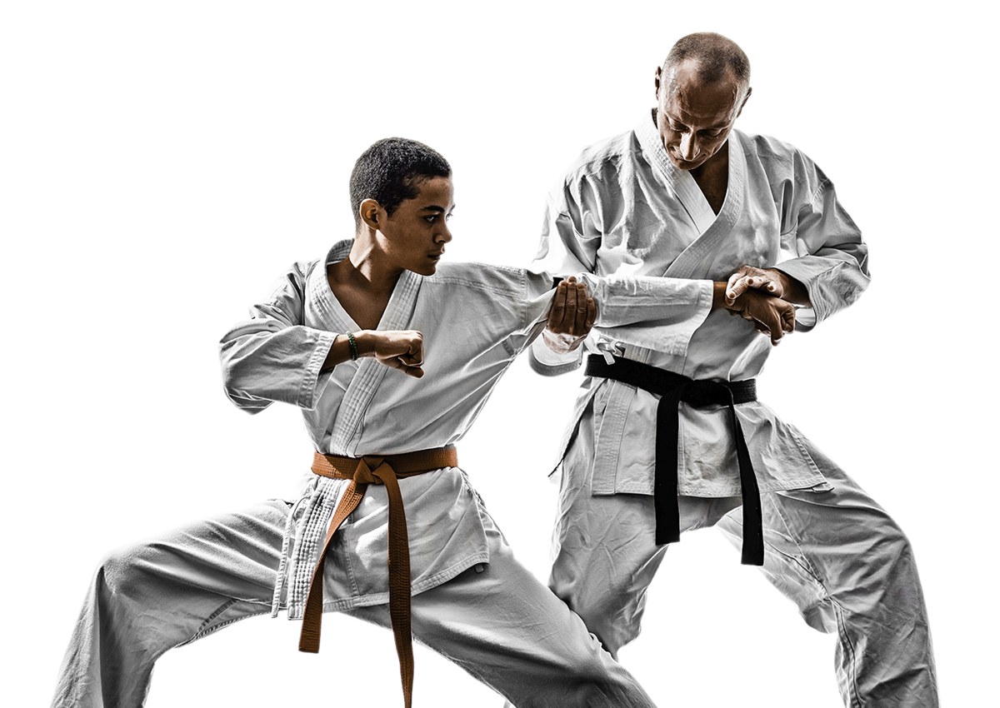
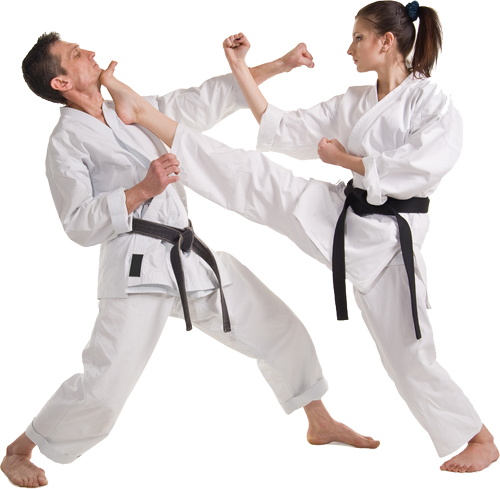
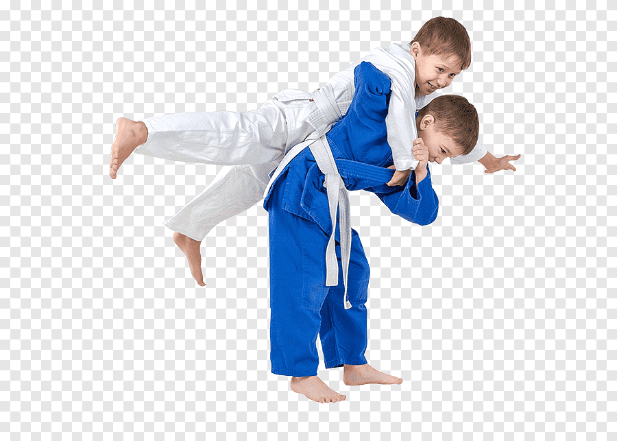

Not only is our Studio amazing, it's also where tons of our martial arts we teach are practiced! Our visitors often stop to admire our arts with a quick Instagram before considering signing up. We've collected a few of our favorite shots here.

American Kenpo Karate (/ˈkɛnpoʊ/), also known as American Kenpo and Kenpo Karate, is an updated system of martial arts based on modern-day street fighting that applies logic and practicality. It is characterized by the use of quick and powerful strikes delivered from all of the body's natural weapons, powered by rapid stance transitions, called "shifting." Beginners are introduced to basic attack responses, which comprise a larger system taught through scripted scenarios, which allow instructors a platform to share concepts and principles Ed Parker emphasized in his teachings.

Taekwondo, Tae Kwon Do or Taekwon-Do (/ˌtaɪkwɒnˈdoʊ, ˌtaɪˈkwɒndoʊ/;[3][4][5] Korean: 태권도/跆拳道 [tʰɛ.k͈wʌn.do] (About this soundlisten)) is a Korean martial art, characterized by punching and kicking techniques, with emphasis on head-height kicks, jumping spinning kicks, and fast kicking techniques. The literal translation for tae kwon do is "kicking," "punching," and "the art or way of."

Jujutsu (Japanese: 柔術 jūjutsu About this soundlisten (help·info)), also known as jiu-jitsu and ju-jitsu, is a family of Japanese martial arts and a system of close combat (unarmed or with a minor weapon) that can be used in a defensive or offensive manner to kill or subdue one or more weaponless or armed and armored opponents.[1][2] A subset of techniques from certain styles of jujutsu was used to develop many modern martial arts and combat sports, such as judo, sambo, ARB, Brazilian jiu-jitsu, and mixed martial arts. .